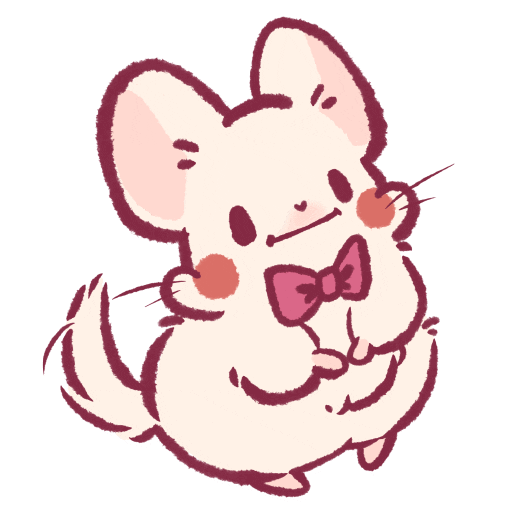
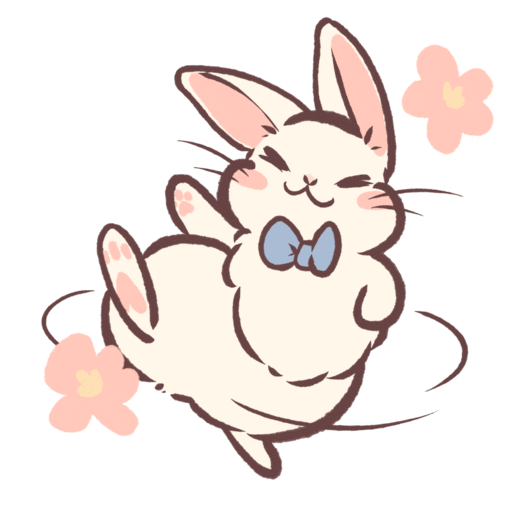
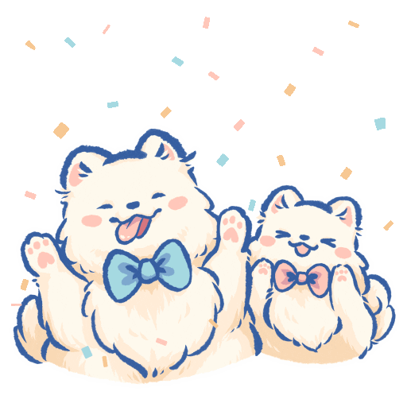
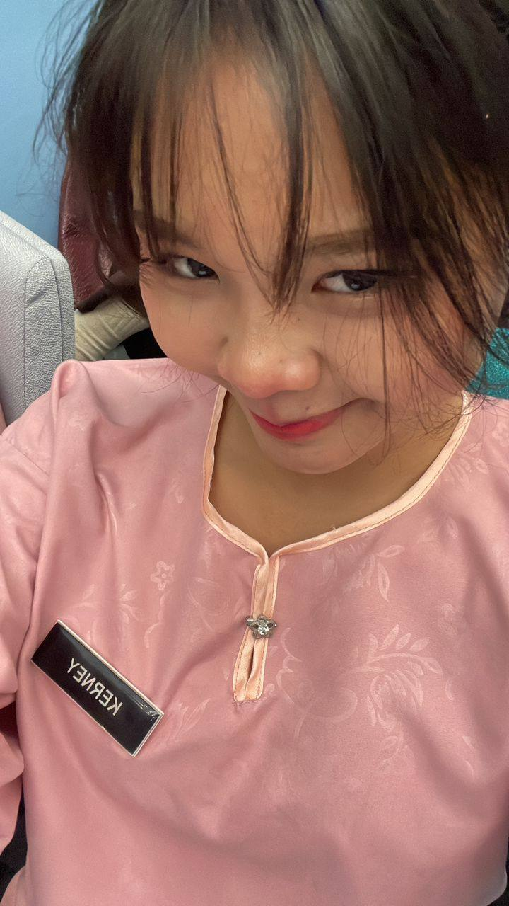
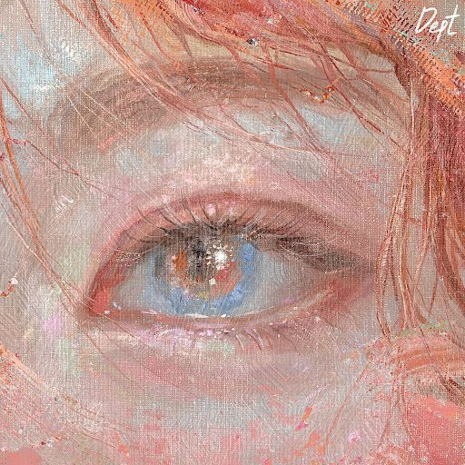
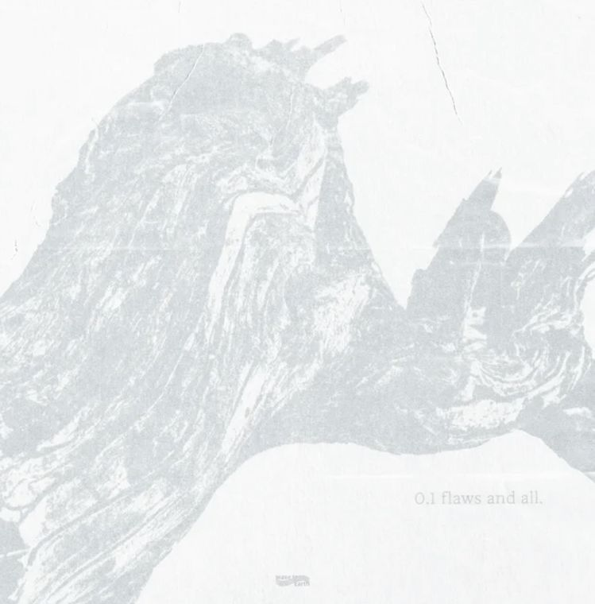
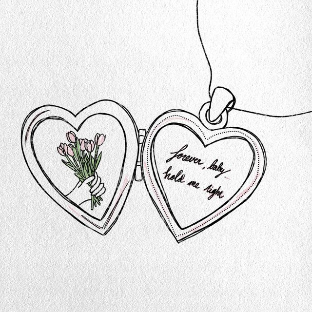
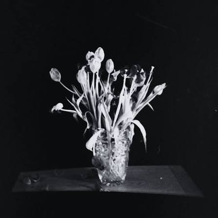

Hi, Sweetheart!❤️,
Please input the password
clue: our birthday combine

Are you ready to open this?
Awww, How mean!! Pretty Pleasee🥺

My princess is 21 Years old this year! 🎂
Happy birthday to my most beautiful, loving, and caring future wife 🤍

My favorite person
Our Memories 📷
Eventhough we don't have much time together 💕 However I'm so grateful and cherish for every moment we've shared...💕
Tap any photo to read my thoughts...

Lab Memories

Matching Outfit

My Cute Study Partner

First Time Chimney with You!

Man I love this picture alot

Love you baee

My Favourite Picture of you with my family

I miss you alot

Unexplained Feeling

Late night Dates!!

Pout with Me

Why time so Fast...
Songs That Remind Me Of You 🎶
Every time these play, I think of us...

Strawberry Champagne
Dept
Actually, I do look at you every chance I get. I think I always have. Even back then, when I didn’t really understand what I was feeling, you already meant so much to me. I just didn’t know how to put it into words.
This song somehow always reminds me of you. I don’t really know why, but whenever I hear it, my mind just goes back to you. Maybe because, without you, something in me feels incomplete. You became a part of my life before I even realized how important you were going to be to me.
We weren’t together at first. In fact, I pushed you away so many times. I kept thinking that maybe I should stay away, maybe I shouldn’t get too close. But somehow, no matter how many times I tried, you were still there. You still found your way to stay close to me.
I honestly don’t know how you did that.
And even though our memories together weren’t always the sweetest, I still remember the little things about you. I noticed you when you laughed, when you were sad, when you were upset, and even when you were being your silly little self. I noticed the way you were, even when I was only able to watch you from afar.
The funny part is, I was the one who pushed you away, yet somehow, you were still the person who kept catching my attention.
I couldn’t stop looking at you.
I couldn’t stop wondering what you were thinking, what made you happy, what made you sad, and all those little things that made you who you are. I wanted to know more about you, even when I didn’t understand why I cared so much.
Looking back now, maybe my heart knew before I did.
Maybe that's why this song reminds me of you so much. Because somewhere between all the moments I tried to stay away from you, I was already falling for you without even realizing it.
And now that I have you, I don’t want to just look at you from afar anymore.
I want to be beside you.
I want to see you laugh up close, hold you when you're sad, annoy you when you're being silly, and be there for all the little moments in between.
I think if I could go back and tell the old me one thing, I’d tell him to stop pushing you away.
Because the girl he kept trying to stay away from would eventually become the girl he never wants to lose. ❤️

bad
wave to earth
This song reminds me of you every single time. And honestly, because of you, I started loving wave to earth. Somehow, they found a special place inside my heart, just like you did. seasons, daisy., love., homesick... those are some of my favourites, but if I had to choose one song that feels the most like us, it would always be bad.
Let’s go back a little bit.
I think you already know that I love anime songs more than anything else. So before you came into my life, I didn’t even know wave to earth existed. I never thought I would listen to their songs this much. But somehow, after meeting you, every wave to earth song started reminding me of you.
Especially this one.
I still remember that day when we went hiking to Chimney Hill, just the two of us. bad kept playing in the background that day, and somehow, the whole atmosphere felt different. It didn’t feel like just another day anymore. It felt like a little part of our own love story was quietly starting without either of us saying anything.
That was also the first time I ever held a girl's hand.
And I still remember how warm your hand was.
I don't think you realized how big of a deal that was for me. I was such a shy kid. Talking to a girl was already a huge thing for me, and yet somehow, with you, I found myself reaching for your hand first.
I didn't think too much about it at the time.
I just wanted to hold your hand.
When we were hiking, I reached for your hand because I didn't want you to fall. When we were crossing the road, I reached for your hand because I didn't want you to trip.
Maybe those were simple little things.
But for me, they meant so much.
Because somehow, you made me feel calm. Really calm. The kind of calm that I couldn't explain. I didn't have to think about what I should say or how I should act. I could just be myself around you.
And I think that's something I'll always treasure about you.
You made a shy boy feel brave enough to reach for your hand.
You made something that used to feel so difficult feel so natural.
And now, whenever I hear bad, I don't just hear a song anymore.
I remember that day.
I remember the hike.
I remember walking beside you.
I remember your hand in mine.
And most of all, I remember how it felt to be there with you.
You, Kerney.
Only you.
If someone asked me why I reached for your hand that day, I'd probably say it was because I didn't want you to fall.
But if I'm being completely honest now...
Maybe a part of me was already afraid of letting you go. ❤️

if only
Skyline
This is the song I listen to the most whenever I think about you. Because there are so many times where I sit alone and wonder... If only I understood you better back then. If only I didn't run away. If only I was a little more mature. If only I knew how much you actually meant to me.
Kerney, I think about it a lot. For the whole two years we spent in matriculation, I had you there. You were right there, somewhere in my life, and yet somehow, I still managed to let so much time pass without truly understanding what I had. Sometimes I think about all the memories we could have made. I imagine us spending those two years together. Going out after class, eating together, walking around for no reason, laughing about stupid things, taking pictures, annoying each other, and just being there for one another.
Two years. We had so much time. And I didn't know how precious it was.
What hurts me the most is knowing that some of it wasn't taken away from us by circumstances. I was the one who pushed it away. I misunderstood you when I should have tried to understand you. I ran away when I should have stayed. I kept my distance when maybe all you needed was for me to be there.
And the worst part is, you were still there. You kept giving me chances to understand you, while I was too caught up in my own fear and confusion to realize what you were actually giving me. Sometimes I wonder if I was just too stupid to see it.
If only I had stopped for a moment and really looked at you. If only I had understood your feelings instead of assuming things. If only I wasn't so afraid of getting close to you. If only I had been brave enough to choose you back then...
Maybe those two years would have been ours. Maybe I wouldn't have to sit here now wondering what it would've been like to have you beside me all that time.
And sometimes, I think about the times I hurt you. I wish I could go back and be the person you needed me to be. I wish I could tell that younger version of myself, "She's important. Don't run away from her. Don't make her feel like she's not enough. Don't wait until you lose her to realize how much she means to you."
But I can't go back. I can't give you those two years. I can't erase the things I did or the moments where I made you feel hurt. And honestly, that's something I'll probably always regret.
But Kerney, there's one thing I'm grateful for. After everything. After all my mistakes. After all the times I pushed you away... You still chose to stay.
And I don't ever want to take that for granted.
So this time, I'm not going to keep wondering "what if?" Because I have you now. And this time, I want to do things differently. I want to understand you. I want to stay when things get difficult. I want to choose you even when I'm scared. I want to give you the love I should have given you back then.
Maybe I didn't choose you from the start. Maybe I wasn't ready back then. But I am here now.
And if you still let me, I want to be beside you until the very end. I'll treasure every chance you've given me, every memory we make, and every day that I get to call you mine.
Thank you, Kerney. For staying when you could have left. For giving me chances when I kept giving you reasons not to. For still believing in us when I didn't even know how to believe in myself.
And most importantly...
Thank you for choosing to stay.
I promise, this time, I choose you too.
And I'll keep choosing you.
Every time. ❤️

if it's not you
PRYVT
I think this is the song that reminds me of the moment I finally understood something. It was you from the beginning.
Maybe somewhere deep inside, I already knew. I just didn't understand it at the time. I was too confused, too scared, and honestly, too immature to realize what was right in front of me. And by the time I finally understood... I was already too late.
There were things I had done that I couldn't take back. Words I couldn't unsay. Moments I couldn't change. And no matter how much I wished I could go back and do things differently, I knew I couldn't rewrite what had already happened. I thought maybe that was it. Maybe I had already lost my chance with you.
But somehow, through some miracle I still can't explain, you're here again. And Kerney, you really don't know how thankful I am to God for that. Out of everyone I could have met, out of all the people who could have stayed in my life, somehow, I was given another chance with you. I don't want to take that miracle for granted.
Because now I know. I don't want to look for someone else. I don't want to imagine a different person beside me. I don't want another love story. If it's not you, then I'd rather be alone.
After everything we've been through, after all the mistakes I've made, and after somehow finding our way back to each other... I know who I want. It's you.
This time, I don't want to keep wondering about the person I could have ended up with. I want it to be us. I want us to be the ones who finally get to stay together. I want to grow with you, learn with you, make mistakes with you, fix things with you, and keep choosing each other even when things aren't easy.
But more than anything, I want God to be the one guiding us through all of it.
So, God...
Please take care of us. Please help me become someone who knows how to love her properly. Give me the patience to understand her, especially when I don't understand what she's feeling. Give me the strength to stay when things become difficult, instead of running away like I used to. And please give her the strength to understand me too, to forgive me when I make mistakes, and to keep growing with me.
Please protect our hearts from anything that could pull us apart. When we disagree, teach us to listen. When we hurt each other, teach us to forgive. When we feel tired, remind us why we chose each other. And when life gets difficult, please don't let us forget how far we've already come.
I don't know what the future holds for us, God. I don't know how many difficult days are waiting for us, or how many things we'll have to overcome together. But if You allow it...
Please let me walk through all of them with her.
Let us grow together. Let us become better people together. Let our love become stronger with every year that passes. And if this person is truly the one You've placed back into my life...
Please, God, let me keep her.
Please guide us, protect us, and give us the strength to hold onto each other until the very end. I don't ask for a perfect relationship. I just pray for a lasting one. One where, no matter how many times life tests us, we still find our way back to each other.
And if You let me have one wish for the rest of my life... I think I already know what I would ask for.
Please let it be us.
Please let it be Kerney. And please let me love her for as long as You allow me to. ❤️
About You
The 1975
To be honest, this is my favourite song right now. About You. And maybe that's because, whenever I listen to it, I can only think about you, Baee.
I love you. I love you with all of my heart, with all of my might, and with everything I have in me. I love everything about you. And I mean everything. I want to keep learning about you as we grow older together. I want to know the beautiful parts of you, the soft parts of you, the silly parts, the annoying parts, and even the evil part of you AHAHAHAHA. I want to know every version of you that life brings out.
So don't worry too much about the things you don't like about yourself. Don't worry about your scars. Don't worry about your attitude. Don't worry about the little things that make you think maybe I would see you differently. Because I won't. Those things don't make me love you any less. I love every single part of you, even the parts you sometimes struggle to love yourself.
I don't want to love only the easy version of you. I don't want to be there only when you're happy, pretty, calm, and everything is going perfectly. I want you. The whole you. The girl who laughs until she can't breathe, the girl who gets annoyed at me, the girl who can be silly for absolutely no reason, the girl who sometimes gives me that attitude AHAHAHA, the girl who gets sad and doesn't know what to say, the girl who has scars and insecurities, and the girl who isn't perfect. I don't need you to be perfect for me, Baee. I just need you to be you.
And there's something I want you to know more than anything. If one day you lost everything you remembered about us, if one day you forgot our first conversations, our stupid jokes, our dates, our hugs, our fights, our memories, and even forgot who I was... I would still stay. I'd sit beside you and introduce myself again. I'd tell you about how we met, the stupid things we did, the day I first held your hand, and every little memory that made me fall for you. And I'd let you get to know me all over again.
Even if I had to make you fall in love with me from the beginning, I'd do it. Because I don't love you only because of the memories we've made. I love you because you're you. So even if everything disappeared tomorrow, my love for you wouldn't disappear with it. I would still choose you. I would still look for you. I would still reach for your hand. And I would still stay.
Because after everything we've been through, after all the things I regret, after all the "what ifs" and all the chances we've somehow been given, I finally understand what I want. I want you, Baee.
I want to grow old with you. I want to meet every version of you that hasn't existed yet. I want to watch you change, grow, become stronger, become sillier, become more annoying AHAHAHA, and become the person you're meant to be. And I want to be there through all of it.
So don't ever be afraid that I'll suddenly stop loving you because you've changed. I'll change too. We'll grow together. And I'll keep learning how to love you through every version of you.
If you ask me how long I'll stay, I don't know what the future looks like. But I know one thing. I'm not backing down. Not from you. Not from us. Not this time.
I love you, Baee. And if I had to choose you all over again...
I'd still choose you. Every single time. ❤️